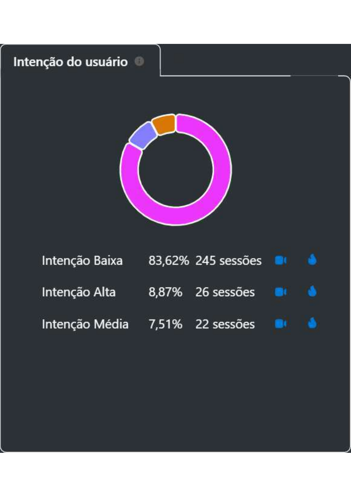
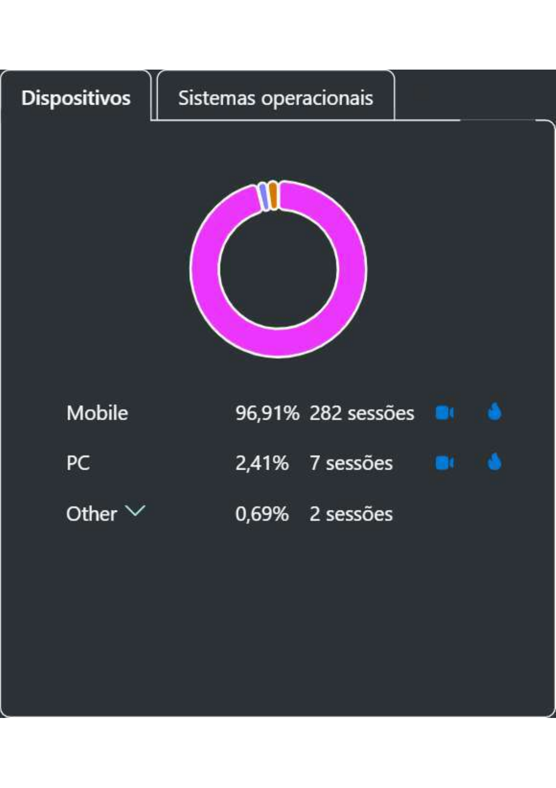
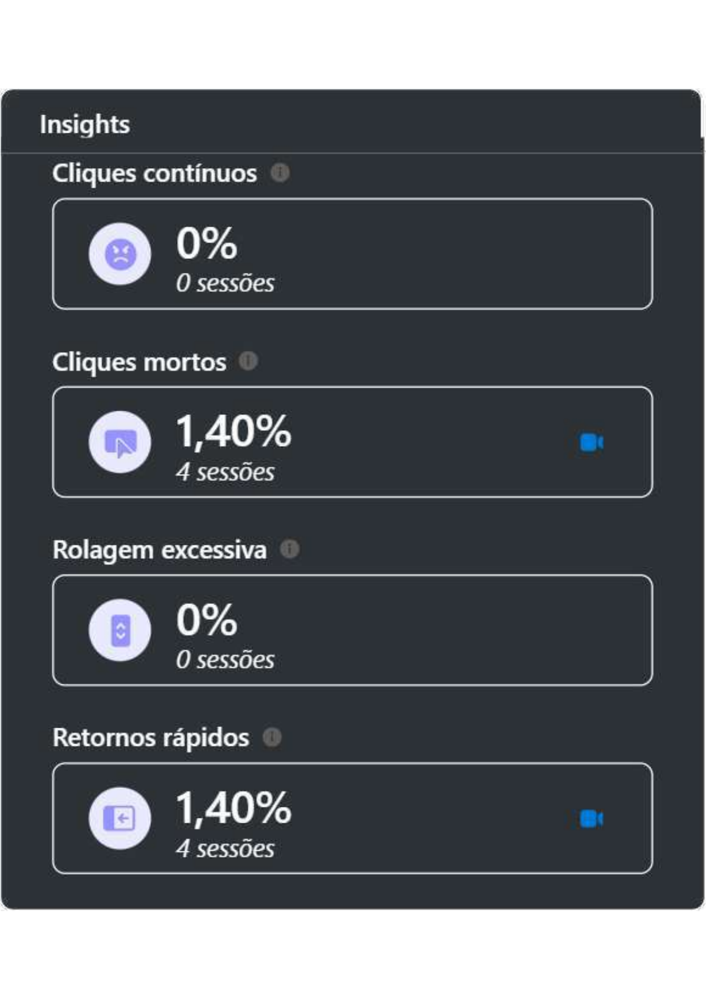
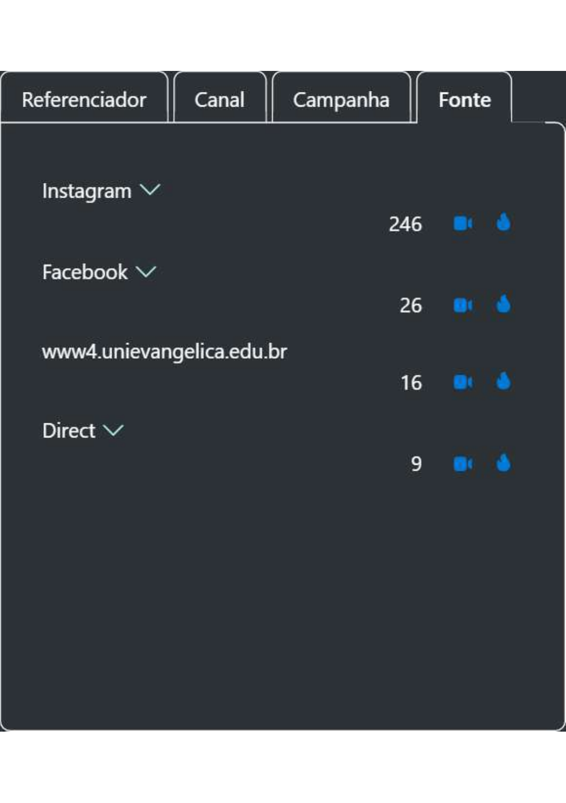

Case Study · UX/UI & Data Analytics
Popularity and Conversion Report — UniEVANGÉLICA
User behavior analysis and performance tracking using Microsoft Clarity. This study identifies high-interest courses and validates traffic strategies based on real data.
Executive Summary
281
Unique Users
96.9%
Mobile Access
83.6%
Browsing Intent
Popularity Ranking
| Rank | Course | Intensity | Potential |
|---|---|---|---|
| 1st | Medicine | 🔥🔥🔥🔥🔥 | Very High |
| 2nd | Dentistry | 🔥🔥🔥🔥 | Very High |
| 3rd | Law | 🔥🔥🔥🔥 | High |
| 4th | Psychology | 🔥🔥🔥🔥 | High |
| 5th | Veterinary Medicine | 🔥🔥🔥 | Medium-High |
UX & Data Insights
User Intent
Sessions with High Intent (8.8%) represent a qualified audience ready for conversion.

Devices & OS
Dominance of Mobile (96.9%) and iOS (70.8%) shows a mobile-first priority.

Frustration Metrics
Dead Clicks (1.4%) are at healthy levels, showing good usability.

Traffic Sources
Instagram is the primary driver for redirected sessions.

Strategic Analysis
Strategy Validation
The analysis confirms that the Medicine and Dentistry audiences are the most engaged. This validates the redirection strategy and highlights opportunities for focused retargeting.
Conversion Projection
Based on observed CTR for premium courses, we project high sales potential for the next cycle, focusing on further mobile optimization for better accessibility.